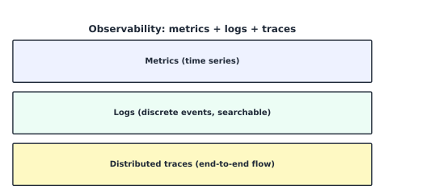

Monitoring, Logging, and Performance Management#
Learning Objectives#
Tell monitoring from observability.
Read performance metrics (Four Golden Signals, percentiles).
Apply capacity planning and SLO/SLI thinking.
Manage logs (collection, retention, alerts).
Operate Amazon CloudWatch, CloudTrail, AWS Config.
Monitoring vs. Observability#
Monitoring = watch known signals for known problems → “Is it broken now?”
Observability = infer internal state from any output → “Why is it behaving this way?”
The three pillars of observability: metrics, logs, traces.
{kind=link}

Fig. 17 Observability combines metrics (time series), logs (events), and distributed traces (request flow).#
The Four Golden Signals & Metrics#
Signal |
What |
Example |
|---|---|---|
Latency |
response time |
p99 = 300 ms |
Traffic |
request rate |
rps |
Errors |
fail rate |
5xx / 2xx ratio |
Saturation |
“fullness” |
CPU 85% |
Metric kinds: counters (↑ only, e.g. requests), gauges (instant, e.g. CPU%), histograms (latency distribution). Averages hide the tail — monitor percentiles:
Logs#
Logs = immutable, discrete records of events (auth, errors, transactions).
Log lifecycle: emit (JSON-structured) → collect (CloudWatch unified agent) → store/search → alert → retain per policy.
CloudWatch Logs: log groups → streams → events.
Subscription + metric filters: turn log lines into metrics/alarms (e.g., count
ERROR).Retention: set (e.g., 30–90 days hot; archive long-term to S3/Glacier).
Centralized logging: ship to a dedicated security account for tamper resistance.
Capacity Planning#
Forecast demand so you provision enough — but not too much.
Under-provision → errors; over-provision → waste. Cloud answers with Auto Scaling (reactive capacity management) plus your strategic forecasting.
SLIs / SLOs / SLAs#
SLI = key metric (e.g., p99 latency).
SLO = target (e.g., p99 < 300 ms, 99.9% of the time).
SLA = the contract (e.g., 99.95% for ALB multi-AZ) — usually backed by a credit.
Derive alerting from SLOs (burn-rate alerts), not arbitrary thresholds.
Amazon CloudWatch#
AWS-wide metrics, logs, alarms, dashboards, and events service.
Element |
Use |
|---|---|
Metrics |
counters/gauges over time; can be custom via |
Alarms |
action on threshold breach (SNS/Auto Scaling) |
Dashboards |
shared visualizations |
Logs |
log groups/streams + retention + subscription |
Events (EventBridge) |
react to state changes |
Example alarm: average CPUUtilization > 80% for 2 consecutive 1-min periods → scale out.
AWS CloudTrail#
CloudTrail records the API history (who, when, from where) for governance/compliance.
Records all management events by default + optionally data events (S3, Lambda).
Logs go to an S3 bucket (ideally cross-account), to CloudWatch Logs, to EventBridge.
Organization trail = one trail for every account (read-only, tamper-evident).
Use Log File Validation to detect later tampering.
AWS Config#
AWS Config records configuration state of your resources over time and evaluates config rules (continuous compliance).
AWS Config captures |
CloudTrail captures |
|---|---|
What each resource is (config snapshot, drift) |
What actions ran, by whom/when |
Config rules: e.g., “S3 buckets must have versioning,” “Security Groups must not be world-open on port 22.”
Remediation: non-compliant resources can be auto-corrected via Lambda.
Recorder: must be enabled per region to start recording resource changes.
Checkpoint#
Q1. Give one metric that is a counter and one that is a gauge.
Answer. Counter: Requests (monotonically increases). Gauge: CPUUtilization (rises/falls).
Q2. Why is p99 preferred over the average for a latency alert?
Answer. Average hides the slow tail; p99 surfaces the bad experience a small fraction of users hit.
Q3. What does a CloudWatch metric filter turn into, and give one use of it.
Answer. It turns log lines into a CloudWatch metric, usable to create alarms (e.g., raise an alarm on repeated ‘AuthFailure’ logs).
Q4. CloudTrail and AWS Config both audit — name one thing each uniquely provides.
Answer. CloudTrail gives who did what API when (non-repudiation); Config gives the configuration state over time and compliance checks.
Q5. Define one SLI, one SLO, and one SLA in one sentence each.
Answer. SLI = signal measured (p99 latency). SLO = target goal (p99 < 300 ms, 99.9%). SLA = contract with a penalty (99.95% monthly uptime = service credit).
Sources#
The concepts in this chapter are summarized from the following authoritative sources:
Amazon CloudWatch User Guide: https://docs.aws.amazon.com/AmazonCloudWatch/latest/monitoring/
AWS CloudTrail User Guide: https://docs.aws.amazon.com/awscloudtrail/latest/userguide/
AWS Config Developer Guide: https://docs.aws.amazon.com/config/latest/developerguide/